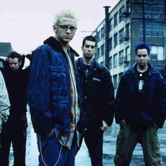

integrantes
Miembros actuales
- Mike Shinoda – Líder, vocalista, guitarrista, tecladista y programación (1996–2017, 2024–presente)
- Brad Delson – Guitarrista líder, pianista, percusiones y coros (1996–2017, 2024–presente)
- Joe Hahn – Tecladista, sintetizador, sampler, programación y coros (1996–2017, 2024–presente)
- Dave Farrell – Bajista y coros (1996-1998, 2000–2017, 2024–presente)
- Emily Armstrong – Voz principal (2024–presente)
- Colin Brittain – Baterista y percusión (2024–presente)
Miembros anteriores
- Rob Bourdon: Baterista y percusión (1996-2017)
- Mark Wakefield: voz (1996-1998)
- Chester Bennington: voz, coros, guitarra rítmica y percusiones (1999-2017; su muerte)
- Kyle Christener: bajo (1999)

temas de la banda
El grupo se ha caracterizado desde sus inicios por interpretar sus canciones con diversos temas que abarcan diferentes aspectos desde lo personal hasta lo social. En su mayor parte temas líricos que se refieren a los sentimientos, y conflictos sociales. La banda ha hablado acerca de diversas cuestiones, y los cambios en el trayecto de su discografía. Hybrid Theory y Meteora hablan principalmente acerca de conflictos en las relaciones, desórdenes internos y problemas personales. El álbum Minutes to Midnight es generalmente mucho más oscuro, tal y como lo indica el nombre del mismo.
Regresar